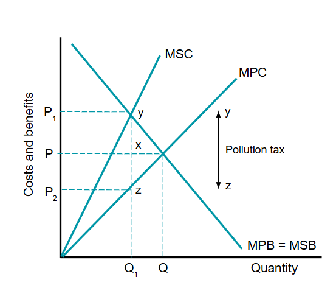
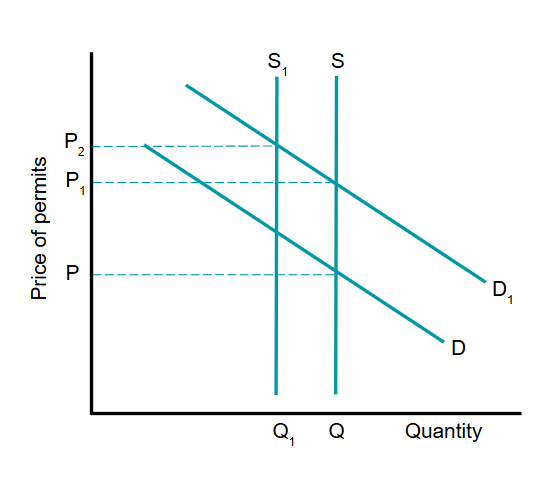
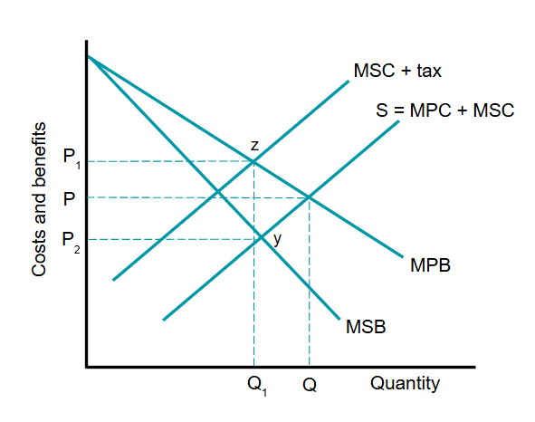
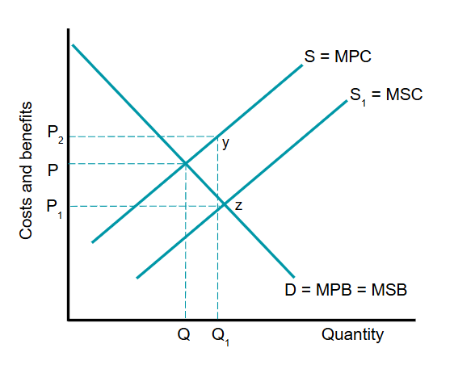

Many government interventions are used to correct market failure due to externalities. These main interventions include:

Specific and ad valorem indirect taxes:
The government taxes activities where too much negative externalities are produced. An indirect tax should be imposed on the individual or on the firm that has caused the negative externality.
This graph shows the effects of imposing an ad valorem green or pollution tax on a firm, shifting price from P to P1 (MPC and MSC diverge as output increases since the tax is levied on the quantity of output).
The tax paid by consumers is equal to the area PP1yx.
The tax paid by producers is equal to the area P2Pxz.
The total tax paid is equal to the area P2P1yz.
However there are two main problems with this approach:
Firstly, the big problem is being able to know or estimate the exact value of the tax that should be imposed. This is because it is difficult to put monetary values on the costs of externalities.
Secondly, a green tax will not be effective if the demand of the product is price inelastic. The amount consumed will barely change despite the increased price due to taxes.
Regulations:
Regulation is another way to overcome market failure caused by negative production externalities. Regulations are legal restrictions imposed on firms by the government.
Consider the case of a mining company that pollute the surroundings. The government might intervene by setting standards that restrict the amount of polluted waste that can be legally dumped. The government would then need to regulate and inspect the company to make sure that these restrictions are enforced. If regulations are being abused, a regulatory body can impose large fines on the company. If damage persists, the firm could be forced to close.
Deregulation involves the removal of any regulations that act as a barrier to entry for new firms seeking to enter a market. The purpose of deregulation is to encourage competition by allowing new firms to enter. New firms are likely to be more efficient; prices will fall and polluting firms are likely to be forced to exit the market if they are unable to compete.
Property Rights:
Property rights allow owners to decide how their assets could be used. If a property right can be established, a market solution can usually be reached through agreement. By changing or extending property rights, owners of property can prevent others from imposing costs on their property.
If a polluting firm has property rights, then those who are affected by its activities could pay the polluter to reduce the scale of activity and therefore pollution. In principle the polluter would require a payment equal to the loss in profit. The government is likely to bargain with these firms until a solution is reached.
If those affected by negative externalities are assigned property rights, then a polluting firm may be sued and obliged to compensate in some way.
Pollution Permits:
Another form of intervention is to provide firms with a permit to produce a given level of pollution. Unlike indirect taxation and regulations, pollution permits are a market-based solution as they can be bought and sold.

When introduced, the supply of pollution permits is S with a demand of D, and the market price is P.
Overtime more pollutants are being emitted due to production growth and demand increases to D1. With a fixed supply S, price rises to P1.
This incentivises firms to be more environmentally efficient.
A more ambitious approach can be applied by reducing the number of permits over time. Hence the supply curve shifts left to S1, with prices rising to P2. This puts even more financial pressure on firms to invest in cleaner technologies.

Specific indirect taxes:
Negative consumption externalities created by one group of consumers reduce the private beenfit of others. To fix this the government can impose a specific tax on consumers of demerit goods.
Due to external costs, MSB is below MPB. The market is at P and Q.
The social optimum of Q1 can be achieved through imposing an indirect tax equal to yz. This will the shift supply curve left, and price increases to P1, resulting in a fall in quantity from Q to Q1.
Price controls:
Another fiscal policy is to impose a minimum price on products that generate negative externalities of consumption. This will increase the price of these goods. However, the effectiveness of this policy depends on the price elasticity of demand for the product.
Provision of information:
The provision of information involves providing warnings. E.g. photographs printed on tobacco products to deter smoking, information provided on packing of processed food to indicate their sugar/salt content and nutritional value.
Production quotas:
Production quotas involve limiting the quantity of goods that is produced. If the quota is set to a low level, prices are likely to rise, which further reduces the amount consumed. One problem of such measures is that they can lead to informal markets.

Subsidies:
This graph shows how a subsidy to the firm generating positive externalities can correct market failure.
The market under allocate resources at point PQ.
The government should provide a subsidy to the firm equal to the external benefit. As a result, the quantity produced will will increase to Q1 and price will decrease to P1. Allocative efficiency is not achieved.
The size of the subsidy paid by the government is P1P2yz.
Provision of information:
To increase demand for products with positive externalities, government campaigns can be ran to improve education on a particular issue, such as how to avoid spreading a disease.
For firms, governments can produce a host of statistics on industrial costs, prices and export opportunities, which can be useful for firms when making business decisions.
Effective government intervention can produce not only a more efficient allocation of resources but can result in greater social equality and equity by correccting market failure.
The basis of nudge theory lies in the provision of information. It is argued that by presenting choices in a better way, people make better decisions.
In the case of market failure, it can be applied through social media, letters, emails, or personal communications. For instance, consumers may find low cost flights attractive, however, this increases global emissions. A nudge approach would be for a government to make consumers aware of the damage their flights are causing through provision of information such as a media campaign.
Market failure arises when the industry is not being run in the public interest. Governments can take this industry into public ownership to correct market failure. This is known as nationalisation. However, a problem faced by nationalised industry is that the structure of their costs means they are loss-making. Government subsidies are needed to maintain service levels.
Therefore there are arguments that favour privatisation where there is a change of ownership from the nationalised public sector to the private sector. This can have various benefits: costs and consumer prices will be lower along with higher quality products due to the competition in the market. However, this can also result in a private monopoly where there will be little to no benefits for consumers.
It is difficult to say if nationalisation or privatisation is better. Globally, though, industries are usually privatised. The government controls these privatised industries through various policies.
Government policies to correct market failures make economic sense. However, in practice, not all government policies work out as planned. This is known as government failure
There are three main causes of government failure: Imperfect Information, Unintended Consequences, and Policy Conflict.
The correct policies can only be introduced if governments have the correct information. The problem is that governments may have inaccurate or incomplete information. Consequently, they may introduce policies that lead to economic inefficiency.
Some examples of this problem are:
A further problem that arises with government intervention is that there can be unintended consequences. These consequences can create inefficiencies. Some examples in which this can happen are:
Government intervention in the running of the economy is often justified by the need to reduce inequality. However, it is possible that government intervention might increase inequality. For example, an indirect tax on energy use that aims to reduce harmful emissions of greenhouse gases will have different effects on different groups of people. Those with lower incomes will have to pay proportionately more than those with high income. This increases inequality in society
Government failure can occur in the case of subsidies as well. Subsidies might enchance competitiveness and keep workers in jobs, but if provided to industries such as fossil fuels which emits harmful greenhouse gasses, it creates inefficiencies.
Regulations: a wide range of legal and other restrictions that come from government or regulatory bodies.
Property Rights: where owners have a right to decide how their assets may be used.
Pollution Permit: a form of licence given by governments that allows a firm to pollute up to a given level.
Provision of Information: when governments directly provide information to correct market failure.
Production Quota: a physical limit on what can be produced.
'Nudge' Theory: influencing choice by 'nudging' individuals towards making more effective decisions.
Nationalisation: when a government takes over a private sector business and transfers it to state ownership.
Government Failure: where government intervention to correct market failure leads to a net loss of economic welfare.